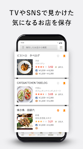

Tabelog Premium 会员值不值？这账我算过三遍
从免费版功能边界到付费版新增权益，分轻度、主力、重度三类用户逐一算账，给出可直接对号入座的付费决策结论。
开头直接抛问题
我第一次在日本住满两周的时候，几乎每天都在开着 tabelog官网 搜店。刷到收藏清单攒了六十多家、订位记录八次之后，应用首页弹出了 Premium 会员的推广条——价格不算贵，但也不是个零头。我停下来问自己：这钱花得值吗？
这账我算过三遍。每次旅行回来复盘时都会重新掂量一遍。结论和使用强度强相关，和"你是不是喜欢吃"反而没那么直接。下面把账本摊开。
定价拆解：免费版给了什么，付费版多了什么
应用本身不花钱，从官方下载拿就行。先说价格档——Premium 会员按月订阅，年付有折扣，折算下来月费在一顿定食的区间。买断选项没有——它就是个持续订阅模型。
免费版的核心功能其实相当完整：
- 搜店 + 看评分：分数、排名、百名店标识、基础奖项徽章，这些全部免费；
- 收藏清单：一键保存、写备忘、按收藏时间排序都能用；
- 在线预约：绝大多数店铺支持，流程不收费；
- 积分系统：到店消费积 V 积分，积分抵现——免费用户也能积、也能抵；
- 榜单浏览：金银铜奖、百名店系列的完整名单和介绍，免费用户都能看。
换句话说，免费版覆盖了"找店 → 收藏 → 订位 → 到店 → 积分"这条完整闭环。它不挡你用，只是在几个地方"降频"。

付费版的新增权益，逐条列清楚：
| 权益 | 免费版 | Premium |
|---|---|---|
| 收藏清单排序 | 仅收藏时间 | 自定义拖拽排序 + 分组标签 |
| 搜索筛选维度 | 基础（地区、菜系、分数） | 追加"去过 / 未去过"、"收藏里有空位"、"已获奖项徽章" |
| 积分倍率 | 基础倍率 | 预订积分加速 + 每月登录奖励积分包 |
| 收藏店空位提醒 | 手动进店查 | 自动推送空位变化（仅支持在线预订的店） |
| 高级榜单视图 | 基础浏览 | 奖项提名池、分数段位对比视图 |
说实话，这些权益没有一个是"没有就用不了"的。它做的事情是把你重复手动做的那些操作自动化，把你想对比但嫌麻烦的维度摊开给你看。
这个定价策略挺鸡贼的——它不卡核心路径，专卡"高频重复操作的效率"。
算账：三类用户逐个对号入座
轻度用：一年去日本一两次，每次三五顿正餐
这类用户的典型场景：旅行前两周集中刷收藏，到了当地逐家查空位订位。
免费版够不够？完全够。 收藏时间排序对单次旅行的清单管理够用；空位手动查五家也花不了十分钟；积分攒一次旅行的量离兑换门槛还远，加速倍率意义不大。
付费后每单位时间成本算一下： 假设一次旅行因为自动空位提醒省了三次"点进去 → 没位 → 退出 → 点下一家"的操作，每次节省三十秒。月费折算到单次旅行，每节省一分钟花掉的钱——算下来不如你在便利店多买一罐咖啡。
结论：永远不用付。 省下的那点时间不值得月费，而且你收藏的店大概率也不会多到需要分组标签管理。
主力用：一年多次，或单次住两周以上，每次十几顿饭
这类用户的收藏清单通常在一百家以上，经常出现"想找上次收藏的那家寿司但翻了半天"的情况。
免费版的痛点开始显现： 收藏时间排序在攒到八十家之后就失效了——你分不清"上次东京行存的"和"三个月前大阪存的"；空位手动查变成了重复性劳动，尤其是热门店（比如金奖和铜奖里的名店），你可能每天点进去看一次，连看一周都没位，收藏清单也没法按"有空位"筛选。
付费后省的时间开始量化： 自定义分组标签把收藏按地区/菜系/想去优先级拆开——比如"东京必吃"、"大阪备选"、"京都米其林"，订位前一眼扫完；自动空位推送意味着你不用每天打开应用刷同一家店，有位了系统通知你；搜索时追加"仅看奖项徽章"这个筛选，比你一家家点进去看奖章快得多。
积分加速在这个档位也开始有意义——一年十几顿消费下来，倍率提升加月度登录奖励，年终能换出一顿百元档的午餐券。
结论：可以付，但等旅行预订完再开月付就行。 不用年付——旅行结束后到下次出发可能间隔三个月，这段时间会员在闲着。开当月，订完位、收完空位推送就取消。
重度用：在日本常驻、或一年五次以上旅行、或美食博主
收藏清单几百家起步，每天都在刷新店、写口碑、对比分数段位。
免费版的效率瓶颈会非常致命： 收藏时间排序在三百家之后基本报废；搜索筛选只有基础维度意味着你每次找"收藏里有没有那家铜奖的居酒屋"都要翻好几页；空位手动查几十家热门店等于每天花十五分钟做机械重复。
付费版对重度用户是效率工具。 自定义分组标签让你的收藏清单变成一个可检索的私库；空位自动推送把"每天刷同一家店有没有位"这个重复任务完全消除；高级榜单视图让你能直接对比不同分数段位的店铺分布——这对写口碑内容或规划深度美食路线的人是刚需，具体的分数段位划分和筛选搭配在tabelog文档里有详细说明。
积分加速在这个档位也是实打实的收益：高频预订加月度奖励，年积分能覆盖一顿米其林午市套餐。
结论：闭眼付年付。 重度用的效率提升是量级差——每月多花一顿定食的钱，每天省出二十分钟，年终积分还能吃顿好的，这笔账正着反着算都划算。
替代方案：不付这笔钱的其他路径
如果你看完上面的分类发现自己卡在"轻度用和主力用之间"，或者纯粹不想给订阅模型掏钱，还有几条路可以走：
降低使用频率。 把收藏清单控制在五十家以内，收藏时间排序就够用了；热门店的空位改成"每周查一次"而不是"每天查一次"——热门店空位放出来的节奏本来就是每周固定时段。
借助外部工具。 空位信息不少日本美食博主会在社交平台同步分享，关注几个靠谱的号，比你自己刷效率高；收藏清单其实是个"想去清单"，真到了订位的时候，翻社交平台比翻你半年前存的收藏更准。
积分单独攒。 免费版的 V 积分基础倍率其实不算低，只是攒得慢。一年一次旅行的积分不够兑换，但如果你把积分目标改成"下次旅行抵扣一顿午餐"，免费版刚好够攒出来——这时候 Premium 的加速倍率就是锦上添花而非必需。
用网页版。 Tabelog 的网页版功能比应用少，但收藏和基础搜索都能用，不占内存、也不会被推送打扰。如果你嫌应用太占注意力，网页版是个低干扰的替代。
最终结论：三秒对号入座
- 闭眼付：年五次以上旅行、在日本常驻、或美食博主——效率提升是量级差，年付最划算；
- 按需付：一年两三次、每次两周以上——旅行月开月付，用完取消，别年付；
- 永远不用付：一年一次、每次不到一周——免费版完全够用，省下的钱多吃一顿好的比什么都强。
我自己属于中间档：一年三次左右，每次两周。现在的操作是旅行前两周开月付，订完位、收完空位推送就取消。年付我没试过——主要是不想让一个美食应用在非旅行月的日历里占着一个固定支出。但如果你让我算性价比，年付对重度用户来说确实是最划算的选项。
这套资料同步放在三个仓库，方便不同环境的人拿到：GitHub 主仓库、Gitee 和 GitCode 的镜像都能直接访问安卓版目录，选哪个顺手用哪个。